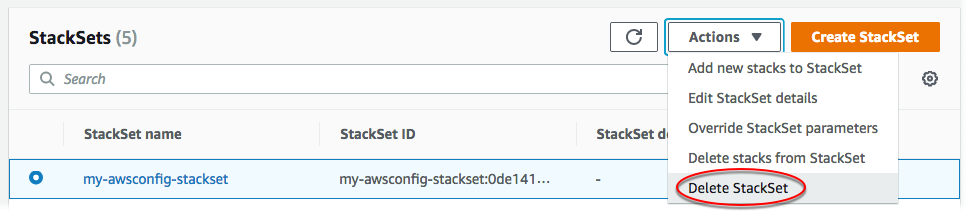

Eliminación de un conjunto de pilas
Cuando haya completado el tutorial de introducción a AWS CloudFormation StackSets, puede seguir los procedimientos de esta sección para eliminar los conjuntos de pilas y otros recursos que haya creado como parte de este tutorial. Para eliminar una pila, primero debe eliminar todas las instancias de pila del conjunto de pilas. Para obtener información sobre cómo eliminar todas las instancias de pilas, consulte Eliminación de instancias de pila del conjunto de pilas.
Eliminación de un conjunto de pilas mediante la AWS Management Console
-
En la página StackSets (Conjuntos de pilas) seleccione el conjunto de pilas creado en Creación de un conjunto de pilas. En este tutorial, hemos creado un conjunto de pilas con el nombre
my-awsconfig-stackset. -
Con el conjunto de pilas seleccionado, elija Delete StackSet (Eliminar conjunto de pilas) en el menú Actions (Acciones).
 -
Cuando se le pida que confirme que desea eliminar el conjunto de pilas, seleccione Delete StackSet (Eliminar conjunto de pilas).
Eliminación de un conjunto de pilas mediante la AWS CLI
Al actuar como administrador delegado, debe establecer el parámetro --call-as en DELEGATED_ADMIN cada vez que ejecute un comando StackSets.
--call-asDELEGATED_ADMIN
-
Ejecute el siguiente comando de la . Cuando se le solicite confirmación, escriba
yy, a continuación, pulse Intro.aws cloudformation delete-stack-set --stack-set-name my-awsconfig-stackset -
Compruebe que la pila se haya eliminado ejecutando el comando
list-stack-sets. Los resultados del comando list-stack-sets deberían mostrar la pila con un estado deDELETED.aws cloudformation list-stack-sets
Eliminar roles de servicio (opcional)
Elimine los roles de servicio que StackSets requiere para la creación de conjuntos de pilas.
Para el caso de conjuntos de pila autogestionados, los roles que ha creado como parteRequisitos previos para las operaciones con conjuntos de pilas del tutorial de esta guía se nombran AWSCloudFormationStackSetAdministrationRole en la cuenta de administrador y AwsCloudFormationStackSetExecutionRole en cada cuenta de destino.
Para conjuntos de pilas administradas por servicios, los roles que se crearon automáticamente por StackSets como parte del Requisitos previos para las operaciones con conjuntos de pilas para el tutorial de esta guía tienen el sufijo CloudFormationStackSetsOrgAdmin en la cuenta de administración de la organización y CloudFormationStackSetsOrgMember en cada cuenta de destino.
Para obtener más información sobre la eliminación de roles, consulte Eliminación de roles o perfiles de instancia en la guía de usuario de IAM.
Para eliminar un rol de servicio utilizando la AWS Management Console
Inicie sesión en la AWS Management Console y abra la consola de IAM en https://console.aws.amazon.com/iam/
. -
En el panel de navegación, elija Roles y, a continuación, marque la casilla de verificación junto al rol que desee eliminar.
-
En el menú Role actions (Acciones de rol) en la parte superior de la página, elija Delete role (Eliminar rol).
-
En el cuadro de diálogo de confirmación, elija Yes, Delete (Sí, eliminar). Si está seguro, puede continuar con la eliminación, aunque los datos del último acceso al servicio sigan cargándose.
Para eliminar un rol de servicio utilizando la AWS CLI
-
Ejecute el siguiente comando de la . Cuando se le solicite confirmación, escriba
yy, a continuación, pulse Intro.aws iam delete-role --role-namerole name